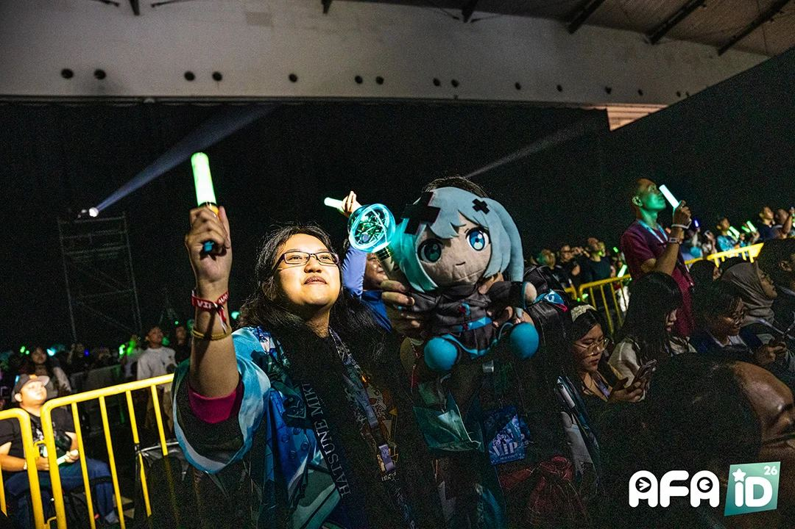

Festivals · Culture
Anime Festival Asia Singapore 2026 (AFA)
- Dates
- –
- Venue
- Suntec Singapore Convention & Exhibition Centre
- Location
- Singapore, Singapore
- Format
- In-person
- Category
- Culture
- Industry
- Culture
- Official website
- https://animefestival.asia/
About
Dates are local Singapore dates (SGT, UTC+8).
Topics: anime, Japanese pop culture, cosplay, concerts.
No organiser attendance figure found on official pages (24 Nov 2026). Ranked by an estimated size tier 'large' (our judgement from format, venue and scale, not an official number). A Japanese government (CoFesta) report gives 126,998 visitors for AFA Singapore 2025 (https://www.cofesta.go.jp/pdf/2026/4/403_AFASG25_0330.pdf); not an organiser figure.
Sources
- Official — https://animefestival.asia/